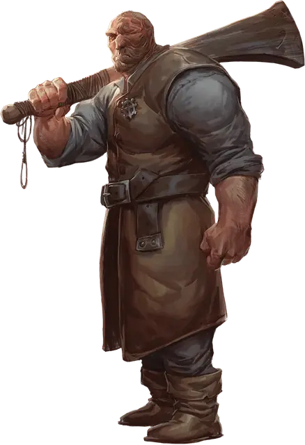

Мортлок Вантампур
Mortlock Vanthampur
Средний Гуманоид (Человек), законно-злой, именной НИП

Класс Доспеха 12
Хиты 90 (12к8 + 36)
Скорость 30 футов
| мод | спас | ||
|---|---|---|---|
| СИЛ | 18 | +4 | +4 |
| ЛОВ | 14 | +2 | +2 |
| ТЕЛ | 17 | +3 | +3 |
| мод | спас | ||
|---|---|---|---|
| ИНТ | 10 | +0 | +0 |
| МДР | 12 | +1 | +1 |
| ХАР | 13 | +1 | +1 |
Навыки Атлетика +6, Запугивание +5
Чувства пассивное Восприятие 11
Языки Общий
Опасность 3 (700 опыта)
Бонус мастерства +2
Особенности
Упорный (2/день). Мортлок может перебросить проваленный спасбросок, и обязан использовать новый результат
Действия
Мультиатака. Мортлок совершает две атаки палицей.
Палица. . Рукопашная атака оружием: +6 к попаданию, досягаемость 5 футов, одна цель. Попадание: 9 (2к4 + 4) дробящего урона плюс 5 (2к4) дробящего урона, если Мортлок получал урон после своего прошлого хода.
Тяжёлый арбалет. Дальнобойная атака оружием: +4 к попаданию, дистанция 100/400 футов, одна цель. Попадание: 7 (1к10 + 2) колющего урона
Описание
Герцогиня Таламра Вантампур, мать Мортлока, терпит его, но старшие братья Тёрствелл и Амрик его ненавидят, считая болваном и выродком. Половину лица Мортлока ещё в детстве изуродовал ожог, и это уродство придало ему жуткий облик. Мать отправила его в подземелье под банями, чтобы помогать культистам координировать нападения по всему городу. Когда стало ясно, что культисты могут справиться и без Мортлока, Тёрствелл и Амрик втайне от матери сговорились с несколькими культистами Баала, чтобы те убили Мортлока.